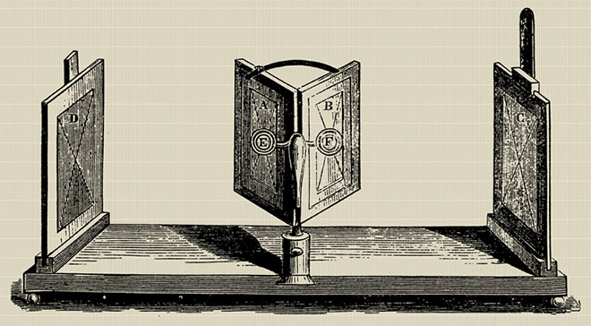

HISTORIA DE LA REALIDAD AUMENTADA
En 1935, Stanley Weinbaum publicó Las gafas de Pygmalion, una historia de ciencia ficción en la que el protagonista lleva unas gafas que le transportan a un mundo ficticio que estimula sus sentidos de forma adecuada y que incluye grabaciones holográficas. Algunos consideran que este es el origen del concepto de realidad virtual (RV), ya que esta historia fue una buena predicción de los objetivos y logros del futuro.
Sin embargo, los primeros desarrollos técnicos de VR fueron en la década de 1830, por lo que aquí es donde comienza nuestra línea de tiempo:
- 1838
Sir Charles Wheatstone fue el primero en describir la estereopsis en 1838 y recibió la Medalla Real de la Royal Society en 1840 por su explicación de la visión binocular, una investigación que lo llevó a construir el estereoscopio.
La investigación demostró que el cerebro combina dos fotografías (un ojo viendo cada una) del mismo objeto tomadas desde diferentes puntos para hacer que la imagen parezca tener una sensación de profundidad e inmersión (tridimensional).
Esta tecnología permitió a Wheatstone crear el primer tipo de estereoscopio. Utilizaba un par de espejos en un ángulo de 45 grados respecto de los ojos del usuario, cada uno de los cuales reflejaba una imagen ubicada a un lado.
El estereoscopio de espejo de Wheatstone.
- 1935
En 1935, el escritor de ciencia ficción estadounidense Stanley Weinbaum presentó un modelo ficticio de realidad virtual en su cuento Pygmalion's Spectacles . En la historia, el personaje principal conoce a un profesor que inventó un par de gafas que permitían “ver una película que te da vista y oído […] gusto, olfato y tacto. […] Estás en la historia, hablas con las sombras (personajes) y ellas responden […] la historia trata sobre ti y tú estás en ella”.
Cuento corto Las gafas de Pigmalión.
1956
El director de fotografía Morton Heilig creó Sensorama, la primera máquina de realidad virtual (patentada en 1962). Se trataba de una cabina de grandes dimensiones en la que podían caber hasta cuatro personas a la vez. Combinaba múltiples tecnologías para estimular todos los sentidos: había una combinación de vídeo 3D a todo color, audio, vibraciones, olores y efectos atmosféricos, como el viento.
Para ello se utilizaron generadores de aromas, una silla vibratoria, altavoces estéreo y una pantalla estereoscópica 3D. Heilig pensó que el Sensorama era el « cine del futuro » y quería sumergir por completo a la gente en sus películas. Para ello se desarrollaron seis cortometrajes.
La máquina Sensorama VR.
1960
Heilig también patentó la máscara Telesphere, que fue el primer dispositivo de visualización montado en la cabeza (HMD, por sus siglas en inglés). Este dispositivo proporcionaba imágenes estereoscópicas en 3D con una visión amplia y sonido estéreo. En ese momento, los auriculares no tenían seguimiento de movimiento.
1961
Hasta que Comeau y Bryan, dos ingenieros de Philco Corporation, crearon Headsight. Headsight fue el primer dispositivo de video de seguimiento de movimiento. Tenía pantallas de video integradas para cada ojo y un sistema de seguimiento de la cabeza.
Sin embargo, esto no se utilizó para la realidad virtual, sino que se desarrolló para que los militares pudieran observar situaciones peligrosas de forma remota . Una cámara remota imitaba los movimientos de la cabeza para que el usuario pudiera mirar alrededor del entorno.
1965
Ivan Sutherland, un científico informático, presentó su visión de Ultimate Display . El concepto era el de un mundo virtual visto a través de un HMD que replicaba la realidad tan bien que el usuario no sería capaz de diferenciarla de la realidad real. Esto incluía la posibilidad de que el usuario interactuara con los objetos. Este concepto incluía hardware informático para formar el mundo virtual y mantenerlo funcionando en tiempo real. Su artículo se considera el modelo fundamental para la realidad virtual.
“La exhibición definitiva sería, por supuesto, una habitación en la que el ordenador pudiera controlar la existencia de la materia. Una silla expuesta en una habitación de este tipo sería suficiente para sentarse en ella. Unas esposas expuestas en una habitación de este tipo serían restrictivas, y una bala expuesta en una habitación de este tipo sería fatal. Con una programación adecuada, una exhibición de este tipo podría ser literalmente el País de las Maravillas al que Alicia entró.”
1966
Thomas Furness, un ingeniero militar, creó el primer simulador de vuelo para la Fuerza Aérea. Esto contribuyó al avance de la realidad virtual, ya que posteriormente el ejército proporcionó una gran cantidad de fondos para producir mejores simuladores de vuelo.
1968
Sutherland, junto con su alumno Bob Sproull, creó el primer HMD de realidad virtual, llamado La Espada de Damocles . Este soporte para la cabeza se conectaba a una computadora en lugar de a una cámara y era bastante primitivo, ya que solo podía mostrar formas simples de alambre virtuales.
Estos modelos 3D cambiaban de perspectiva cuando el usuario movía la cabeza gracias al sistema de seguimiento. Nunca se desarrolló más allá de un proyecto de laboratorio porque era demasiado pesado para que los usuarios lo llevaran cómodamente; debían sujetarlo con correas porque estaba suspendido del techo.
1969
Myron Krueger, un artista informático, desarrolló una serie de experiencias de “realidad artificial” utilizando computadoras y sistemas de video. Creó entornos generados por computadora que respondían a las personas que se encontraban en ellos. Estos proyectos dieron lugar a la tecnología VIDEOPLACE, que se menciona más adelante.
1972
General Electric Corporation construyó un simulador de vuelo computarizado que presentaba un campo de visión de 180 grados mediante el uso de tres pantallas que rodeaban la cabina.
1975
VIDEOPLACE de Krueger, la primera plataforma de realidad virtual interactiva, se exhibió en el Centro de Arte de Milwaukee. Utilizaba gráficos de computadora, proyectores, cámaras de video, pantallas de video y tecnología de detección de posición y no utilizaba gafas ni guantes. VIDEOPLACE consistía en salas oscuras con grandes pantallas de video para rodear al usuario en “realidad virtual”.
Los usuarios podían ver sus siluetas generadas por ordenador imitando sus propios movimientos y acciones: los movimientos de los usuarios se grababan en la cámara y se transferían a la silueta. Además, los usuarios de diferentes salas podían interactuar con las siluetas de otros usuarios en el mismo mundo virtual. Esto fomentaba la idea de que las personas podían comunicarse dentro de un mundo virtual incluso si no estaban físicamente cerca.
1977
Aspen Movie Map fue creado por el MIT. Este programa permitía a los usuarios recorrer virtualmente la ciudad de Aspen en Colorado, como con Google Street View. Había tres modos: verano, invierno y polígonos.
Se creó a partir de fotografías tomadas desde un automóvil que circulaba por la ciudad. No había HMD, pero se utilizó la interactividad en primera persona y se sugirió que la realidad virtual podía transportar a las personas a otros lugares.
1979
McDonnell-Douglas Corporation integró la realidad virtual en su casco VITAL para uso militar. Un rastreador de cabeza en el casco seguía los movimientos oculares del piloto para coincidir con las imágenes generadas por computadora.
1980
La empresa StereoGraphics creó gafas de visión estereoscópica.
1982
Los guantes Sayre fueron creados por Sandin y Defanti. Estos guantes fueron los primeros guantes con cables. Monitoreaban los movimientos de las manos mediante el uso de emisores de luz y fotocélulas en los dedos de los guantes. De esta forma, cuando el usuario movía los dedos, la cantidad de luz que llegaba a la fotocélula variaba y, a su vez, convertía los movimientos de los dedos en señales eléctricas. Este puede haber sido el comienzo del reconocimiento de gestos.
Furness creó un modelo funcional de un simulador de vuelo virtual para el ejército, llamado Simulador de Sistemas Aerotransportados Visualmente Acoplados (VCASS).
1985
Jaron Lanier y Thomas Zimmerman fundaron VPL Research, Inc. Esta empresa es conocida por ser la primera en vender gafas y guantes de realidad virtual. Desarrollaron una gama de equipos de realidad virtual, como DataGlove, EyePhone HMD y Audio Sphere.
VPL Research desarrolló una gama de equipos de VR.
1986
Furness desarrolló un simulador de vuelo entre 1986 y 1989 conocido como Super Cockpit. La cabina de entrenamiento incluía mapas tridimensionales generados por ordenador, imágenes avanzadas de infrarrojos y radar, y el piloto podía ver y oír en tiempo real.
El sistema de seguimiento y los sensores del casco permitían al piloto controlar la aeronave mediante gestos, voz y movimientos oculares. Leer más sobre Thomas Furness .
1987
British Aerospace utilizó el HMD de manera similar al Super Cockpit de Furness y desarrolló el Virtual Cockpit, que también incluía reconocimiento de voz.
Jaron Lanier popularizó el término “realidad virtual” mientras trabajaba en VPL Research. Las patentes relacionadas con la realidad virtual y los gráficos fueron adquiridas posteriormente por Sun Microsystems.
La empresa Dimension International creó un software que podría construir mundos 3D en un PC.
1989
Scott Foster fundó Crystal River Engineering Inc. después de recibir un contrato de la NASA para desarrollar el elemento de audio del Proyecto de Estación de Trabajo de Entorno Virtual ( VIEW ), un simulador de entrenamiento de realidad virtual para astronautas . A través de esta empresa se desarrolló el procesamiento de audio binaural 3D en tiempo real.
Mattel, Inc. lanzó el Power Glove, basado en el DataGlove de VPL. El Power Glove era un accesorio de control para el Nintendo Entertainment System, pero nunca despegó porque era difícil de usar.
1990
Jonathan Waldern exhibió Virtuality, una máquina arcade de realidad virtual, en la exposición Computer Graphics 90 en Londres.
1991
Antonio Medina, científico de la NASA, diseñó un sistema de realidad virtual para conducir los robots exploradores de Marte desde la Tierra en un supuesto tiempo real a pesar de los retrasos en las señales entre los planetas. Este sistema se llama “Computer Simulated Teleoperation” (teleoperación simulada por computadora).
El grupo Virtuality lanzó Virtuality , unas máquinas recreativas de realidad virtual en las que los jugadores podían jugar en un mundo de juegos en 3D. Fue el primer sistema de entretenimiento de realidad virtual producido en masa.
En la cabina Virtuality se colocaron cascos de realidad virtual e imágenes tridimensionales estereoscópicas inmersivas en tiempo real. Algunas de las máquinas podían conectarse en red para juegos multijugador. Con el tiempo, algunos de los juegos arcade más populares, como Pac-Man, tuvieron versiones de realidad virtual.
SEGA anunció que estaba trabajando en el casco de realidad virtual SEGA VR, que estaría disponible para el público en general. Este casco estaba pensado para ser utilizado en juegos arcade y en la consola Mega Drive. Tenía un aspecto similar a una visera debido a la influencia de películas populares, como RoboCop. Se colocaron pantallas LCD en la visera, así como auriculares estéreo y sensores para rastrear el movimiento de la cabeza.
Sin embargo, nunca se lanzó a pesar de que se crearon cuatro juegos para ella. Una de las explicaciones para la cancelación fue la preocupación de SEGA de que la gente se lesionara porque el efecto de realidad virtual era demasiado realista. Sin embargo, esto parece poco probable debido a la limitada potencia de procesamiento.
1994
SEGA lanzó SEGA VR-1, una máquina arcade con simulador de movimiento.
VictorMaxx lanzó un casco VR llamado CyberMaxx.
1995
Nintendo lanzó la consola Virtual Boy, que reproducía videojuegos monocromos en 3D. Fue la primera consola portátil que mostraba gráficos en 3D. Pero fue un fracaso comercial debido a:
La falta de gráficos en color
La falta de soporte de software
No era cómodo de usar.
Un año después se suspendió su producción.
Se lanzaron cascos de realidad virtual asequibles para el hogar:
Virtual IO lanzó las I-Glasses.
Forte lanzó el casco VFX1.
1997
Los investigadores de Georgia Tech y Emory University utilizaron la realidad virtual para crear escenarios de zonas de guerra para veteranos que recibían terapia de exposición para el trastorno de estrés postraumático. Esto se conoció como Vietnam virtual [link 1] [link 2] .
2001
SAS Cube fue la primera sala cúbica basada en PC. De ahí surgió Virtools VR Pack.
2007
Google presentó Street View.
Immersive Media fue identificado como el contratista que capturó las imágenes de cuatro de las cinco ciudades inicialmente mapeadas por Street View, utilizando su conjunto de cámaras dodecaédricas patentado en un automóvil en movimiento.
2010
Google introdujo un modo 3D estereoscópico para Street View.
Palmer Luckey, un emprendedor de 18 años, creó el primer prototipo de las gafas Oculus Rift. Presentaban un campo de visión de 90 grados, algo nunca antes visto, y dependían de la potencia de procesamiento de una computadora para generar las imágenes. Este nuevo desarrollo impulsó y renovó el interés en la realidad virtual.
2012
Luckey lanzó una campaña de Kickstarter para Oculus Rift que recaudó 2,4 millones de dólares.
2014
Facebook compró la empresa Oculus VR por 2.000 millones de dólares. Este fue un momento decisivo en la historia de la realidad virtual, ya que esta tecnología ganó impulso rápidamente a partir de entonces.
Sony anunció que estaba trabajando en Project Morpheus, un dispositivo de realidad virtual para PlayStation 4 (PS4).
Google lanzó Cardboard, un visor estereoscópico para teléfonos inteligentes de bajo costo y fácil de instalar.
Samsung anunció el Samsung Gear VR, un auricular que utiliza un teléfono inteligente Samsung Galaxy como visor.
Más personas comenzaron a explorar las posibilidades de la realidad virtual, incluyendo la incorporación de accesorios innovadores; por ejemplo, Cratesmith, un desarrollador independiente, recreó una escena de hoverboard de Regreso al futuro combinando Oculus Rift con una tabla de equilibrio de Wii.
2015
Las posibilidades de la realidad virtual comenzaron a estar ampliamente disponibles para el público en general, por ejemplo:
El Wall Street Journal lanzó una montaña rusa de realidad virtual que siguió los altibajos del mercado de valores Nasdaq.
La BBC creó un vídeo de 360 grados donde los usuarios ven un campamento de inmigrantes sirios.
El Washington Post publicó una experiencia de realidad virtual de la Oficina Oval en la Cena de la Asociación de Corresponsales de la Casa Blanca.
RYOT, una empresa de medios, exhibió Confinement, un cortometraje de realidad virtual sobre el confinamiento solitario en las cárceles de Estados Unidos.
Etc.
Gloveone tuvo éxito en su campaña de Kickstarter. Estos guantes permiten a los usuarios sentir e interactuar con objetos virtuales.
2016
En 2016, cientos de empresas estaban desarrollando productos de realidad virtual.
La mayoría de los auriculares tenían audio binaural dinámico.
Las interfaces hápticas estaban poco desarrolladas. Las interfaces hápticas son sistemas que permiten a los humanos interactuar con una computadora usando el tacto y los movimientos, como los guantes Gloveone que se estaban desarrollando. Esto significaba que los teléfonos móviles generalmente se operaban con botones.
HTC lanzó su casco HTC VIVE SteamVR. Este fue el primer lanzamiento comercial de un casco con seguimiento basado en sensores que permitía a los usuarios moverse libremente en un espacio.
2017
Muchas empresas están desarrollando sus propios cascos de realidad virtual, entre ellas HTC, Google, Apple, Amazon, Microsoft, Sony, Samsung, etc.
Sony podría estar desarrollando una tecnología de seguimiento de ubicación similar a la VIVE de HTC para la PlayStation 4.
2018
En la F8 de Facebook, Oculus presentó un nuevo prototipo de gafas: Half Dome. Se trata de unas gafas varifocales con un campo de visión de 140 grados.
La realidad virtual ha avanzado significativamente y ahora se utiliza de diversas maneras, desde brindar experiencias de juego inmersivas hasta ayudar a tratar trastornos psicológicos, enseñar nuevas habilidades e incluso llevar a personas con enfermedades terminales a viajes virtuales . La realidad virtual tiene muchas aplicaciones y, con el auge de la tecnología de los teléfonos inteligentes, será aún más accesible.
Ver otras aplicaciones de VR
2019
Forbes describe este año como el año en que la realidad virtual se vuelve real . Oculus Quest, el dispositivo independiente de Facebook, generó mucho interés y dinamismo, se agotó en muchos lugares y generó ventas de contenido por un valor de 5 millones de dólares.
El cambio de los cascos de realidad virtual conectados a los cascos independientes representó un cambio dentro del ecosistema inmersivo, ya que los cascos independientes son mucho más fáciles de usar para el consumidor promedio.
Road to VR informó que los auriculares VR conectados mensualmente en Steam habían superado el millón por primera vez.
Nintendo entró en el mercado de realidad virtual con el kit Labo: VR para Nintendo Switch el 12 de abril.
En marzo, Beat Saber se convirtió en la primera aplicación en vender más de 1 millón de copias en menos de un año.
2020
Oculus Quest 2 se presentó el 16 de septiembre de 2020, durante el evento Facebook Connect 7.
El Quest 2 recibió críticas en su mayoría positivas como una actualización incremental del Quest y continúa vendiéndose por millones en todo el mundo.
2021
Pico lanza el auricular Pico Neo 3, un competidor del auricular Oculus Quest 2.
La empresa china ByteDance, propietaria de TikTok, adquirió Pico en un esfuerzo por diversificar su negocio.
Facebook (ahora Meta) planea gastar al menos 10 mil millones de dólares este año en Facebook Reality Labs, su división metaversa encargada de crear hardware, software y contenido de AR y VR.
2023
Apple anunció su entrada en el mercado de la realidad virtual con Apple Vision Pro, un próximo dispositivo de realidad mixta que se presentará el 5 de junio de 2023 en su Conferencia Mundial de Desarrolladores (WWDC) de 2023. El dispositivo se venderá a 3499 dólares.
Meta anunció el Meta Quest 3 el 1 de junio de 2023 y se lanzó el 10 de octubre. El Meta Quest 3 es un casco de realidad mixta que presenta importantes avances en calidad de pantalla, potencia de procesamiento y capacidades de seguimiento. Cuenta con una resolución de 2160 x 2160 por ojo (en comparación con 1832 x 1920 en el Quest 2), el procesador Snapdragon XR2+ y seguimiento de adentro hacia afuera con precisión y campo de visión mejorados. El casco está disponible por $499.